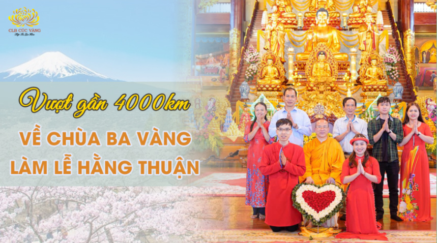
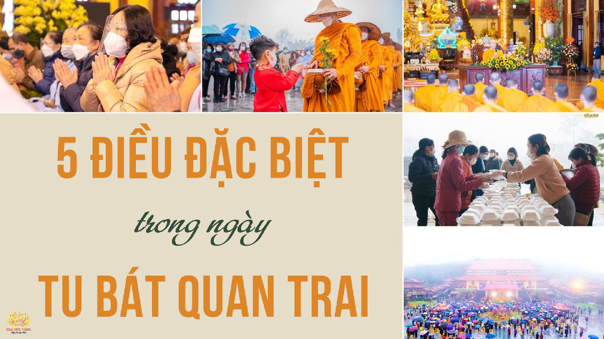
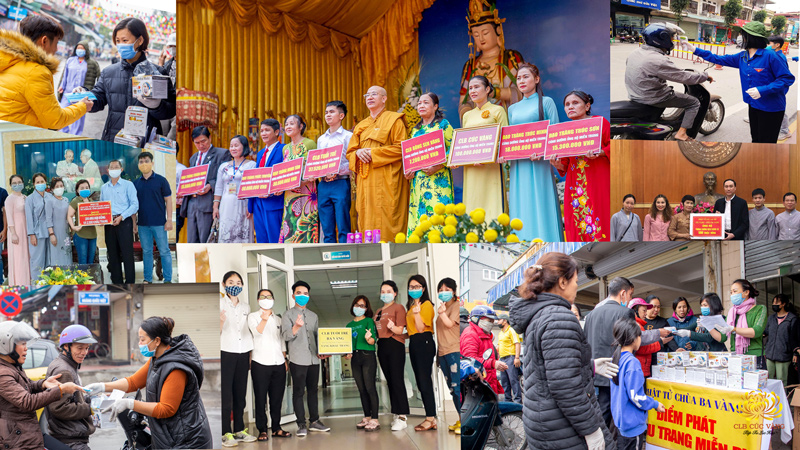
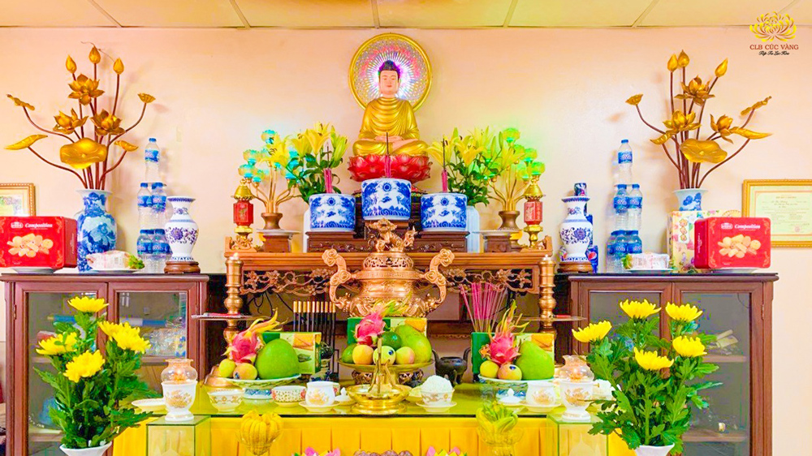
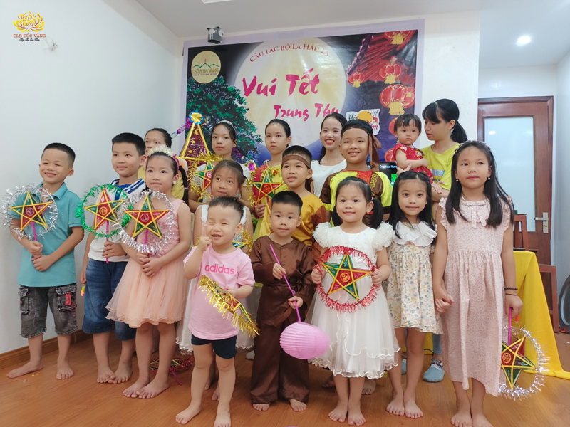
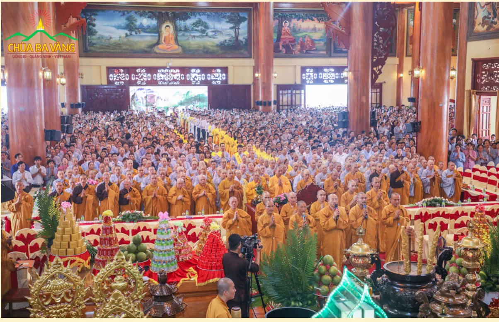
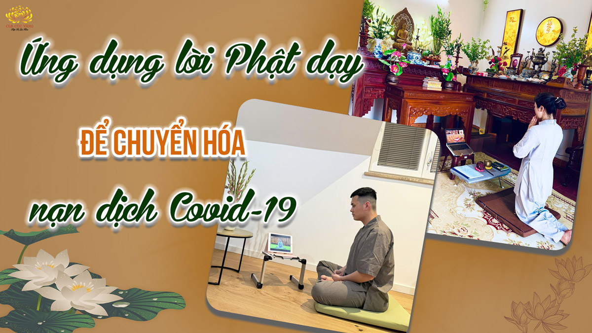
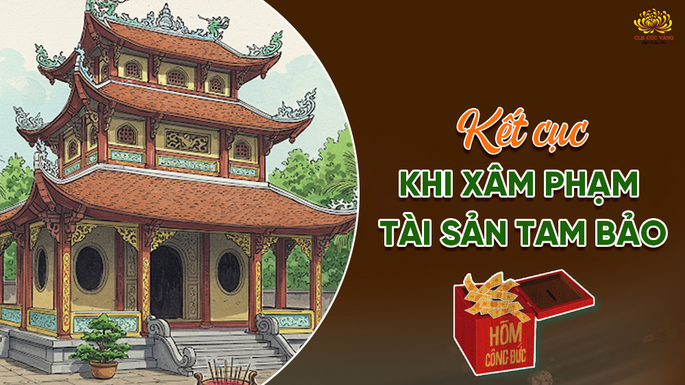
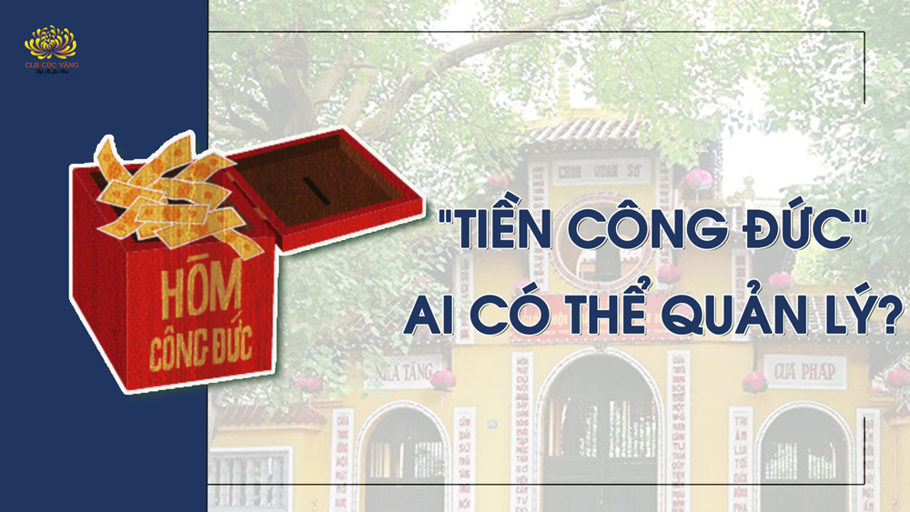

Vượt qua quãng đường xa xôi và nhiều khó khăn khác, cặp tân lang tân nương Phạm tiến Thức – Nguyễn Thị Nga đã được đền đáp bằng một buổi lễ Hằng thuận viên mãn.
Chi tiết
5 điều đặc biệt trong ngày tu Bát quan trai giới đầu năm khiến Phật tử vô cùng hạnh phúc
Sau hơn 1 năm không được về chùa tu Bát Quan Trai do dịch bệnh, ngày tu Bát Quan Trai đầu tiên của năm Nhâm Dần (08/01 âm lịch) diễn ra với rất nhiều cung bậc cảm xúc đặc biệt do có đông đảo Phật tử từ khắp các tỉnh thành trên cả nước lại được tề tựu về ngôi già lam Ba Vàng.
Chi tiết
Phật tử chùa Ba Vàng mang những điều thiện lành đến cộng đồng xã hội
Sư Phụ Thích Trúc Thái Minh từng nói rằng: “Từ khi con nhỏ, Thầy đã có cảm mến với Phật Pháp...
Chi tiết
Bí mật đằng sau những loại hoa quả kiêng kỵ khi thờ cúng
Theo giáo lý nhân quả, nếu chúng ta muốn có phúc thì chúng ta phải tu cái đức. Đức tốt thì phúc sẽ tốt, đức không tốt thì phúc không tốt.
Chi tiếtTừ sự thực hành lục hòa, Phật tử được phát sinh nhiều nhân duyên đặc biệt, trong đó có nhân duyên phát nguyện 108 ngày và kết quả là bố thí được cho các hương linh hữu duyên với mình
Chi tiếtLợi ích to lớn trong ngày kỷ niệm Đức Phật thành đạo nếu Phật tử biết cách hướng tâm
Trước khi thiền định dưới cội Bồ đề, Đức Phật đã phát đại nguyện: Dù máu huyết khô cạn, dù chỉ còn gân, xương và da; ta quyết không rời nệm cỏ này nếu ta chưa đắc thành quả Phật.
Chi tiếtLợi ích của việc đối trước Chư Tăng sám hối
Phật tử chúng ta thực hành pháp sám hối: sám hối với đại chúng (giới hòa đồng tu), sám hối trước tôn hình, tôn tượng chư Phật, Bồ tát và sám hối trước chư Tăng.
Chi tiết
3 điều nên làm khi đón Tết Trung Thu tại nhà giúp con trẻ tăng trưởng thiện duyên
Tết Trung Thu (còn gọi là Tết Đoàn viên) được biết đến như một ngày lễ quan trọng của tình thân, của sự yêu thương và sum vầy. Vào ngày này, mọi người thường
Chi tiếtHướng dẫn cách quán chiếu và thực hành để kiên cố Bồ đề tâm nguyện
Để giữ được tâm Bồ đề kiên cố, không nhàm mỏi quả thực rất khó. Chúng ta phải tự mình tư duy, giác biết, và nỗ lực tinh tấn mới có thể không thối chuyển tâm Bồ đề.
Chi tiết
Hướng dẫn thực hành Bồ đề tâm nguyện theo 10 hạnh nguyện của Đức Phổ Hiền Bồ Tát
Để thành tựu Vô thượng Bồ đề, người Phật tử không chỉ dừng lại ở việc phát Bồ đề tâm nguyện mà phải thực hành Bồ đề công hạnh.
Chi tiết
Ứng dụng lời Phật dạy trong việc tu tập chuyển hóa nạn dịch Covid-19
Là người đệ tử Phật, ngoài việc thực hiện đúng chỉ thị của Thủ tướng Chính phủ và khuyến cáo của Bộ Y tế, chúng ta có thể tu tập theo Phật Pháp như lời Đức Phật dạy.
Chi tiết
Đức Phật dạy về kết cục đau khổ khi xâm phạm tài sản Tam Bảo
Trong kinh Đức Phật dạy, việc xâm phạm tài sản Tam Bảo sẽ mang lại kết cục đau khổ như đọa vào cõi địa ngục, ngạ quỷ,... Do đó, người đệ tử Phật cần hộ trì chư Tăng để bảo vệ tài sản Tam Bảo.
Chi tiết
Chư Tăng là người phù hợp để quản lý tiền công đức: Theo Pháp Phật và pháp luật
Bài viết dưới đây sẽ nêu ra 3 lý do theo Pháp của Đức Phật và pháp luật Việt Nam về việc chư Tăng phù hợp để quản lý, sử dụng tiền công đức.
Chi tiếtVì chúng sinh - Đức Phật đản sanh!
Kiếp đó, khi còn là một vị Đại Bồ Tát Hộ Minh trên cung trời Đâu-suất. Chờ nhân duyên đầy đủ, Ngài hạ sinh xuống cõi người để tu hành thành bậc Chính Đẳng Chính Giác, trở thành một vị Phật tổ thứ 25. Và rồi… thời cũng đã đến!
Chi tiết
Hạnh phúc khi đặt bát cúng dường Ba la mật
Các Phật tử của CLB Cúc Vàng đã đặt bát cúng dường Tăng đoàn trong công đức lục hòa, công đức Ba la mật. Bố thí Ba la mật là Pháp mà Đức Phật tán dương, sẽ giúp các Phật tử nhận được phước báu rất lớn.
Chi tiết
Kính mừng sinh nhật Sư Phụ - Phật tử CLB Cúc Vàng chùa Ba Vàng đón sinh nhật Pháp của mình
“Lý tưởng của Thầy là xây dựng chùa Ba Vàng thành một tùng lâm, một trung tâm Phật giáo lớn
Chi tiết
Xin tán thán và tri ân đức hi sinh của những người Thầy thuốc
Nam mô Phật Bổn Sư Thích Ca Mâu Ni! Kính gửi các Thầy thuốc và quý đạo hữu!..
Chi tiết
Lời nguyện của Đức Phật Dược Sư có thực tế hay không?
Cô ơi, đối với những người có cấu tạo hộp sọ bất thường hoặc bất kỳ một bộ phận nào đó không bình thường, nếu tu tập thì có thể chuyển hoá được không?
Chi tiết
Vào các ngày gần tết, rằm, mùng một, giỗ, gia đình hay xảy ra bất hòa - nên làm thế nào?
“Con chào Cô chủ nhiệm ạ! Con có chuyện muốn hỏi Cô, giúp đỡ gia đình con đỡ khổ đau. Nhà con Tết năm nào cũng cãi nhau ầm ĩ lên Cô ạ! Con thấy khổ quá, không biết nhà con làm thế nào cho đỡ khổ. Con xin thành kính tri ân công đức của Cô ạ!”
Chi tiết
Thực hư việc thả cá chép cuối năm: Thả cá chép lúc nào để được hộ trì?
Quan niệm thả cá chép để ông Công ông Táo cưỡi về trời không đúng với nhân quả. Nhưng nếu hiểu đúng và thực hiện theo nhân quả thì gia chủ sẽ được hộ trì, may mắn.
Chi tiết
Phóng sinh như thế nào để được lợi ích nhất?
Phóng sinh là khi mình nhìn thấy các loại chúng sinh có mạng sống đang bị bắt nhốt, giam cầm, sắp sửa bị giết hại thì phát sinh lòng thương xót, tìm cách cứu chuộc, giải thoát, phóng thích, cứu mạng sống của chúng.
Chi tiết
5 bước quán tự tại trong mùa COVID (Chia sẻ với các Phật tử trong CLB Cúc Vàng - Tập Tu Lục Hòa)
Kính thưa các đạo hữu! Tâm Chiếu Hoàn Quán xin chia sẻ cùng quý đạo hữu về cách quán để tâm được tự tại.
Chi tiết
Cúng ông Công ông Táo thế nào để có nhiều phước?
Ngày ông Công, ông Táo, nhà cháu có mua ba bộ mũ áo, ba con cá chép vàng, cúng xong thì mang ra sông thả trước 12h trưa. Năm nay, cháu mới theo đạo Phật, Cô giúp cháu xem cúng thế nào cho có phước hả Cô?
Chi tiết
Ý nghĩa của việc thả cá chép trong ngày tết ông Công, ông Táo
Vào ngày 23 tháng chạp, mỗi gia đình sẽ sắm sửa một con cá chép để ông Ông ông Táo dùng làm phương tiện để lên trời. Quan điểm như thế có thực sự đúng? Việc thả cá ngày 23 tháng chạp có đem lại lợi ích gì không?
Chi tiết
Chữ "Tín" là gốc của thành công
Vừa qua, ngày 14/11/Canh Tý (tức 27/12/2020), các cán bộ, giáo viên và sinh viên CLB Vì Trẻ Thơ của Học viện Tài chính Hà Nội do PGS.TS Thịnh Văn Vinh - Phó trưởng Khoa Kế toán, trưởng bộ môn Kiểm toán Học viện Tài chính làm trưởng đoàn, đã về chùa Ba Vàng tham quan, lễ Phật và tìm hiểu Phật Pháp...
Chi tiết
Giải điện thờ như thế nào để gia đình được an ổn
Có gia đình lập điện thờ tại gia và nay muốn giải điện thờ đó theo cách của nhà Phật thì phải làm sao để tránh khỏi những điều không hay xảy đến với gia đình?
Chi tiết
Khi đến chùa dâng lễ, hạ lễ, xin lộc thế nào cho đúng?
Không phải ai cũng biết ứng xử đúng khi mang đồ lễ đến dâng, hạ và xin lộc ở chùa mang về nhà. Bài viết sau đây sẽ hướng dẫn bạn thực hành đúng Pháp nhất
Chi tiết
“Hoa cúc trong tâm của chính mình” - Biểu tượng của CLB Cúc Vàng Tập Tu Lục Hòa
Hoa cúc là loài hoa rất đặc biệt, biểu tượng cho các đức tính tốt đẹp của con người là trung, tín, hiếu, nghĩa. Từ khi sinh ra đến khi tàn, dù hoa có héo đi thì cánh hoa vẫn không rụng, lá vẫn không rời cành.
Chi tiết
Ý nghĩa hoa cúc – biểu tượng CLB Cúc Vàng - Tập Tu Lục Hòa
Với những đặc tính tốt đẹp của con người là trung, tín, hiếu, nghĩa, hoa cúc đã trở thành biểu tượng của CLB Cúc Vàng - Tập Tu Lục Hòa từ ngày đầu thành lập
Chi tiết
Bị mất phương hướng: 2 cách giúp bạn vượt qua để hạnh phúc, bình an
Mất phương hướng khiến nhiều người lo âu, mất niềm tin vào bản thân. Để tìm lại định hướng, chúng ta cần đánh giá và làm đúng khả năng của mình.
Chi tiết